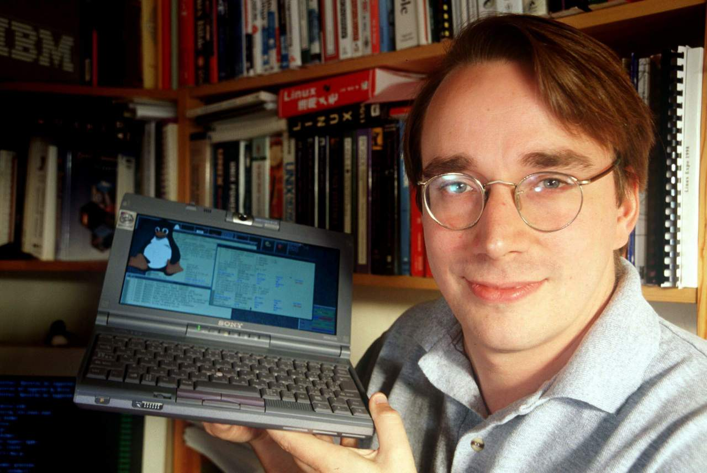

Лінус Бенедікт Торвальдс

Лінус Бенедікт Торвальдс (швед. Linus Benedict Torvalds; народився 28 грудня 1969 у Гельсінкі, Фінляндія) — фінський програміст шведського походження, започаткував розробку ядра операційної системи Лінукс, є її головним архітектором, а також автор найвідомішої розподіленої системи керування версіями файлів Git. 2012 року за створення Linux нагороджений премією Millennium Technology Prize.